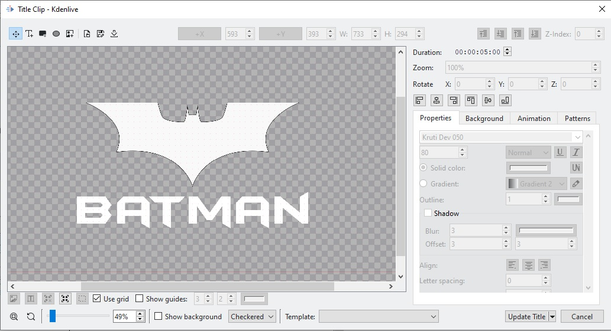
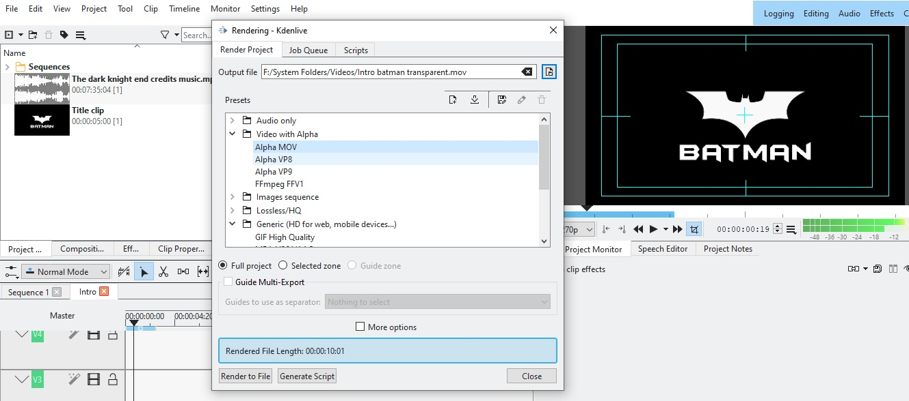

Kdenlive
Video with alpha transparency
Create a title clip with an image with transparency.

Add background audio if required.
Render the video in a format which supports alpha transparency. We are using
mov
file format in this example.
